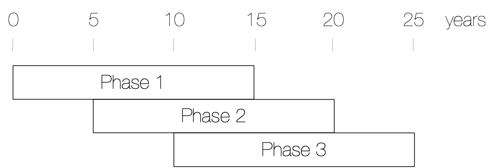

communities of
trees and people
communities of
cars and concrete
- Photo: Gautam Krishnan
- Sound: CC-SA-BY Steim
What would a realistic future worth living be like?
Realistic futures

Note: this scenario optimistic.
It doesn't include climate change.
decentralized
this workshop
About me
Mathijs de Bruin
- Systems thinker(er)
- Philosopher
- Physicist
- Eco-activist
- Hacker
- Human!
Overview
- Designing with Nature
- Creating a Forest Community
- Dreaming a Future
Overview
- Designing with Nature
- Creating a Forest Community
- Dreaming a Future
Designing with Nature
- Natural vs. synthetic systems
- Realistic futures
- Survival principles
Designing with Nature
- Natural vs. synthetic systems
- Realistic futures
- Survival principles
'Natural' (emerging)
vs.
'synthetic' (engineered)
What's the difference?
Natural systems
have
- High diversity
- Coopetition
- Many independent actors
- Scale-free self-similarity
Natural systems
have emergent
- Resilience/anti-fragility
- Self-organisation
- Self-replication
- Downward causality
Natural systems
are born to die
Individuals die for the whole to renew and survive.
evolution
needs
death
it requires
collapse
it requires
failure
death
is
inevitable
(duh)
Synthetic systems
have
- Low diversity
- Hierarchic structures
- Tight control loops
Synthetic systems
have emergent
- Low resilience/fragility
- High control costs
- High scaling costs
Synthetic systems
deny death
Components survive to the detriment of their environment.
Designing with Nature
- Natural vs. synthetic systems
- Realistic futures
- Survival principles
Designing with Nature
- Natural vs. synthetic systems
- Realistic futures
- Survival principles
Realistic futures
'Business as usual' scenarios
August 2018, Monchique, Alvarge, Portugal
Designing with Nature
- Natural vs. synthetic systems
- Realistic futures
- Survival principles
Designing with Nature
- Natural vs. synthetic systems
- Realistic futures
- Survival principles
Survival principles
design for
failure
design like
nature
design like nature
- high diversity
- efficient self-preservation
- minimal control requirements
- highly distributed (smallworld networks)
- coopetition
like…
surfing
flying
mycelium
the interwebz
bacteria
Overview
- Designing with Nature
- Creating a Forest Community
- Dreaming a Future
Overview
- Designing with Nature
- Creating a Forest Community
- Dreaming a Future
Creating a Forest Community
- Principles
- Objectives
- Implementation
Creating a Forest Community
- Principles
- Objectives
- Implementation
Principles
- Resilient: gain from disorder
- Regenerative: grow intrinsically
- Perenial: endure continous renewal
Creating a Forest Community
- Principles
- Objectives
- Implementation
Creating a Forest Community
- Principles
- Objectives
- Implementation
Objectives
Establish 3 economically, ecologically and socially regenerative communities in 30 years.
Objectives
- Establish & share best-practises
- Create regional ecosystem
- Explore scaling behaviour
- Meticulous 'deep' accounting
- Critical self-evaluation
Creating a Forest Community
- Principles
- Objectives
- Implementation
Creating a Forest Community
- Principles
- Objectives
- Implementation
Implementation
- Strategy
- Forests
- Community
Implementation
- Strategy
- Forests
- Community
Positive feedback
Ecology, community, economy
Natural transition
Sustaining under capitalism, thriving beyond
Economic diversity
Integrated cooperative ecosystem
Iterative design
5 year iteration cycle
Iterative design
- Community & ecology
- Economic self-relience
- Regional scaling
Scaling vertically
Minimum viable scale
3-5 households, 8-15 people
Strong core team
- Projects vision
- Stewards community
- Engages participation
Roles
- Mathijs: project architect
- Diego: forest designer
- You? (f): natural communicator
Implementation
- Strategy
- Forests
- Community
Implementation
- Strategy
- Forests
- Community
Forests
What, how and why?
Succession
Assisting natural cycles
Ecology
Fostering natural complexity
Mitigation
Ecosystem services
Implementation
- Strategy
- Forests
- Community
Implementation
- Strategy
- Forests
- Community
Community
What we learned to forget
It's difficult!
(ask anyone)
Best practises
- Emphatic (non-violent) communication
- Grow in conflicts, gain from setbacks
- Natural succession
- Commons transition
Natural succession
- Initiators (year 0-5)
- Consolidators (year 5-10)
- Maintainers (year 10-15)
Commons transition
- Collective property
- Formal decision making
- Legal incorportion
- Federative cooperatism
- Facilitate local integration
Overview
- Designing with Nature
- Creating a Forest Community
- Dreaming a Future
Overview
- Designing with Nature
- Creating a Forest Community
- Dreaming a Future
Dreaming a future
Pockets of light
Strongholds in the darkness
Margins of renewal
'Insignificant' (long-tail) diversity fuels adaptation
however
How to deal with
civil war
being
pacifists
Minimising violence
under
constrained resources
The cake
will
get smaller
How?
When equally sharing isn't enough...
When your kids are hungry...
... and there's a hungry father
at your door.
Fin
Sorry for the bitter after-taste.
Please, refute me.